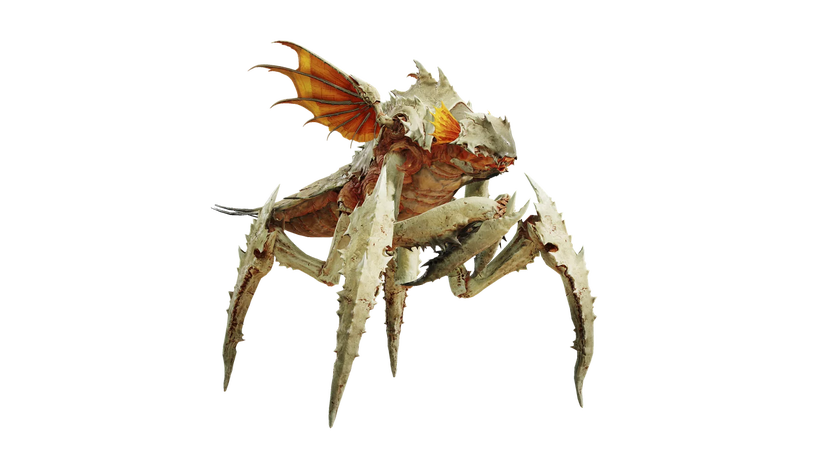
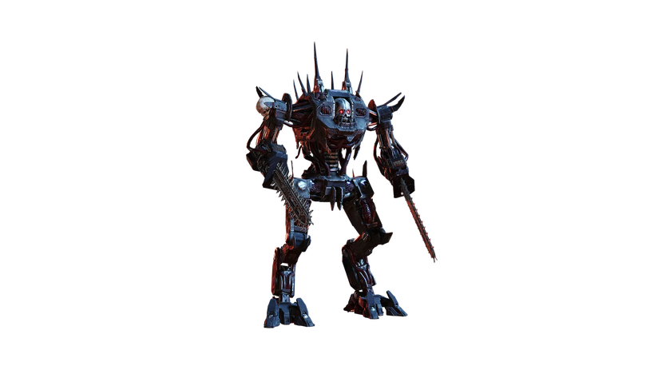

Scavengers:
The weakest of the Terminids, they go for melee damage and usually attack in swarms
Bile Spitter:
Pouncers:
Hunters:
While they're similar to Scavengers, Hunters can jump at you from a distance
Warriors:
While they have frontal armor, Warriors are easy to take down with Machine guns. They're also susceptible to any damage from the sides, where they lack any kind of protection
Bile Warriors:
The Bile Warrior is a lightly armored, medium-sized Terminid. It is a variant of the Warrior, whose body appears to overproduce caustic chemicals
Hive Guards:
The Hive Guard is a medium-size Terminid sporting medium armor on the front of its body. It is a somewhat larger variant of the Warrior, with some believed to an in-between development state before it either metamorphosed into a Brood Commander or a Charger.
Shriekers
Shriekers are a moderate-sized flying Terminid with a large wingspan. They typically travel in large numbers and use dive tactics to swipe at Helldivers. These flying menaces appeared shortly after the activation of the Terminid Control System on the Barrier Planets within the Umlaut Sector.
Stalkers
Stalkers might not have much self-defense, but they have the tendency to go invisible.
Bile Spewers
These bugs will constantly throw acid at you, which can take away your health and slow down your movement.
Nursing Spewers
Nursing Spewers are medium sized Terminids with light armor. Some believe that this variation of the Bile Spewer is either a sub-adult of the Bile Spewer, or a gravid female with abdomens bursting with eggs. They are easily identified via its yellow-orange-brown coloring.
Brood Commanders
A tougher version of the Warrior, they're nearly impenetrable from the front.
Chargers
Chargers only take damage from their exposed rear. They get their name from the fact that they tend to attack you aggressively.
Bile Titans
Bile Titans are the strongest Terminids and can be an absolute nightmare to kill
Troopers:
The infantry of the Automatons, equipped with different weapons
Types:
Marauder:
Rocket Raiders:
Commissars:
Similar to the infantry, but distinguished by a red sword in their left hand.
Berserkers:
Robots with chainsaws for arms. Maintain your distance
Scout Striders:
A moving turret robot with an operator on its back. Aim for its limbs or directly at the operator
Devastators:
An armored version of the Berserker, featuring various weapon variants for its arms.
Types:
Rocket Devastators:
Heavy Devastators:
Giant armored mechs equipped with various weapons instead of arms
Types:
Hulk Scorchers:
Hulk Bruisers:
Hulk Obliterators:
Gunships
A smaller version of the Dropship that can't carry troops.
Tanks
A two-tank version exists; one has a weak spot on its back, while the other has no apparent weaknesses.
Types:
Shredder Tank
Annihilator Tank
Cannon Turrets
Factory Striders
Called "Walkers" by some Helldivers, the Factory Striders are giant, heavily armed behemoths of steel and socialism. As walking Factories on legs, Factory Striders can be found at Automaton outposts or be dropped into battle, firing their cannons and dual miniguns at Helldivers and fabricating batches of Standard Devastators.